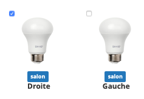
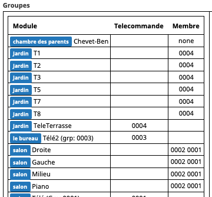
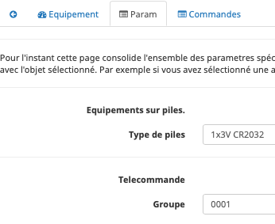

La page de gestion des équipements¶
On accède à cette page via différents moyens:
Le menu Plugins > Protocole domotique > Abeille
Depuis la page de config via le bouton “Ouvrir” de la zone “Etat”
Cette page liste tous les équipements gérés par Abeille et déja inclus dans Jeedom.
Groupes¶
Les équipements peuvent être adressés de deux façons:
Directement via leur adresse Zigbee courte qui leur est attribuée lors de l’inclusion
Ou via une adresse de « groupe » permettant de joindre un ensembles d’équipements en même temps
Les adresses de groupe sont typiquement utilisées pas les télécommandes Zigbee: Hue, Ikea,…
L’intérêt est qu’un seul message sera envoyé sur le réseau Zigbee, répété par tous les routeurs et tous les équipements ayant cette adresse de groupe réagiront donnant une impression d’exécution simultanée.
Note
Astuce: Ça peut aussi vous sortir d’une situation ou la couverture radio n’est pas bonne et ou vous avez du mal à joindre un équipement. Si vous l’adressez avec son adresse courte, le message doit être routé jusqu’à sa destination par une route spécifique qui peut être interrompu par une muvaise liaison radio. Si vous l’adressez avec une adresse de groupe, le message va être répété par tous les routeurs et vous augmentez la chance que l’équipement reçoive l’information.
Vous pouvez aussi utiliser un scénario dans Jeedom pour adresser un groupe d’équipements, en envoyant à chacun d’eux une commande. Cette solution ne permet pas d’avoir l’impression d’instantanéité mais est très flexible si vous avez un mix de produit zwave et Zigbee par exemple.
Video¶
Gestion des groupes¶
La gestion des groupes se fait de deux façons
Note
L option A n’est pas très user friendly et est l’héritage des premieres versions d’Abeille. Je l a garde car elle me permet de faire des tests, et comme j’oubli, je reli ma doc de temps en temps pour savoir comment faire. Utilisez Option B.
Option A:
Soit depuis la ruche avec 3 commandes (Version initiale pour les développeurs):
Ajout
Retrait
Consultation
Option B:
Soit en utilisant la page de configuration du plug in (pour tous les utilisateurs):

Je vous recommande grandement l’option B.
A chaque fois que vous faites un ajout ou retrait, faites une Consultation/Get Group pour mettre à jour les objets Abeille.
Un équipement peut avoir plusieurs adresses de groupes, cela lui permet par de répondre à plusieurs télécommandes. Par exemple, un va et vient à deux, trois, quarts télécommandes,…
Ajout d un groupe à un équipement¶
Option A:
Premier champ: adresse de l’équipement
Deuxième champ: End Point de l’équipement
Troisième champ: l’adresse de groupe a ajouter
Option B:
Sélectionnez la ou les ampoules qui doivent faire partie du groupe (petite case au dessus à gauche des icones):
Faites un « Get Group » pour récupérer les groupes de cette/ces ampoule(s).
Sélectionnez de nouveau l ampoule et saisissez l’identifiant de groupe que vous voulez lui attribuer dans le champ Id, puis utiliser le bouton « Add Group ». Voila l “ampoule doit avoir son groupe de défini.
Maintenant si vous voulez piloter le groupe avec une télécommande Ikea, sélectionner la télécommande, mettez l’identifiant (Hexa à 4 digit) dans le champ Id, utilisez le bouton « Set Group Remote », et immédiatement réveillez la télécommande en appuyant sur un des boutons physique de celle ci. Il est possible que cela ne fonctionne pas du premier coup alors faites le une ou deux fois de plus. Jusqu’a ce qque vous ampoules réagissent à un appui sur la bouton physique de la télécommande. Maintenant il vous reste à renseigné dans l objet Télécommande l’Id du groupe dans ses paramètres pour qu’Abeille pilote le groupe.
Retrait d un groupe à un équipement¶
Option A:
Premier champ: adresse de l’équipement
Deuxième champ: End Point de l’équipement
Troisième champ: l’adresse de groupe a retirer
Option B:
Sélectionnez la ou les ampoules qui doivent faire partie du groupe (petite case au dessus à gauche des icônes), saisissez l’Id et utilisez les bouton « Remove Group ».
Récupérer les groupes d’un équipement¶
Option A:
Premier champ: adresse de l’équipement
Deuxième champ: End Point de l’équipement
L’information groupe doit remonter dans le champ groupe de l’équipement (peut être invisible par défaut, le rendre visible).
Option B:
Sélectionnez l’équipement et utilisez le bouton »Get Group ».
Commande des Groupes¶
Une fois que les groupes sont en place, il faut les commander. Pour cela vous pouvez par exemple utiliser les Télécommande Ronde 5 boutons de chez Ikea ou simuler une télécommande ronde Ikea avec Jeedom: telecommandeRonde5BoutonsSimulation.
Remplacement d’équipements¶
Ce chapitre peut vous interesser si vous souhaitez conserver l’historique d’un équipement qui ne répond plus ou que vous souhaitez remplacer.
L’idée est la suivante:
Vous procédez à l’inclusion du nouvel équipement du MEME TYPE que celui à remplacer
Puis via la partie “remplacement”, selectionnez le vieil équipement
Selectionnez le nouvel équipement
Et cliquez sur “Remplacer”.
Migration d’équipements¶
Si vous avez plusieurs Zigates et souhaitez basculer un équipement de l’une à l’autre, c’est le chapitre qu’il vous faut.
Globalement dans tout réseau Zigbee, la procédure est
d’exclure proprement l’équipement de son réseau initial
puis de le réintégrer dans le nouveau réseau
dans les 2 cas, lors de l’inclusion dans le nouveau réseau, Abeille devrait reconnaitre l’équipement (graçe à son adresse IEEE) et faire la mise à jour nécessaire pour qu’il n’y ai aucun doublon.
Dans la pratique, la partie suivante est une aide à cette migration bien qu’elle puisse ne pas fonctionner dans tous les cas. En particulier les équipements plus vieux que Zigbee 3.0 peuvent être “capricieux”.
Une fois l’équipement et la zigate de destination choisis, la séquence sera la suivante
La Zigate destination passe en mode “inclusion”.
Demande à l’équipement de quitter le réseau.
Si l’équipement est sur piles, vous devez le reveiller dans la foulée. C’est probablement le + compliqué. Une fois sorti du réseau, il devrait se remettre à la recherche d’un nouvau réseau avec qui s’associer.
Dans tous les cas si cette procédure ne fonctionne pas, le plus simple revient à
Mettre la Zigate destination en mode inclusion.
Puis forcer un reset sur l’équipement pour qu’il fasse une nouvelle association.